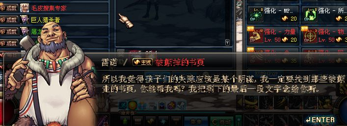
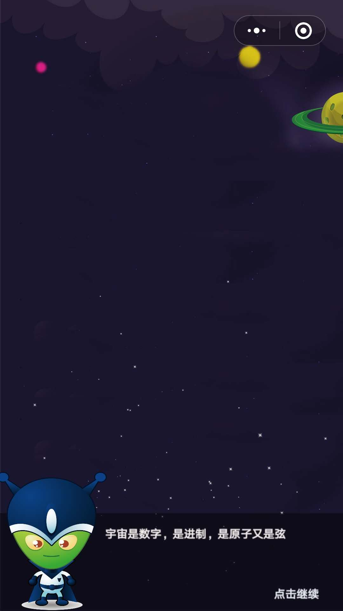
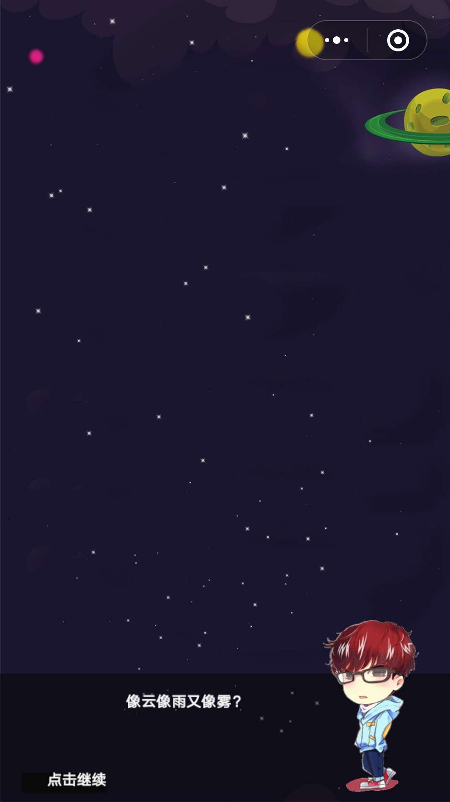
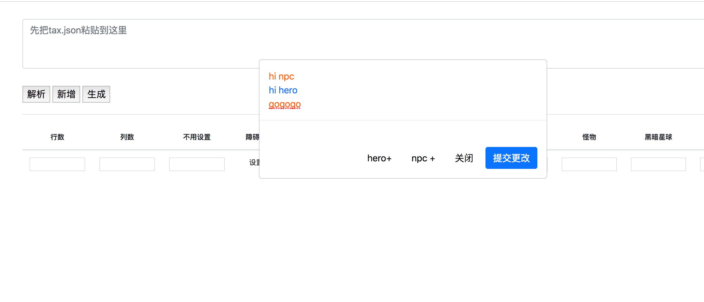

游戏角色对话系统设计
对于一个RPG游戏来说，剧情是不可或缺的东西，而对话系统是推进剧情不可或缺的一部分
对话系统的拆解
毒奶粉里的对话框

主角在游戏世界可能碰到很多npc，可以和 npc 对话，也可以跟 怪物 对话，先假定游戏内的所有对话都是一对一形式的。
首先我们先模拟一个简单的对话
- qqqdu：“hello，npc”
- npc：“咋滴了”
- qqqdu：”没4没4“
假如我们的 qqqdu (主角)想和 npc 交谈，那他会先发起对话，这个对话会 “通知” npc 话的内容。而当npc接受到了 qqqdu 的话，脑子里想了想怎么回复，然后 npc 会 “通知” 主角回复的内容。然后循环这个过程，直到其中有个人不作回复。
分解整个过程后抛出几个问题：
消息分发
很明显，这里用「观察者模式」 来解决，对于被对话人来说，他得知道是谁发起的对话，并且获知对话的内容，根据内容再去通知对话发起人。
我们可以维护一个主体，这个主体管理着所有实体（不管是主角、npc、怪物，都是实体）。 不是所有的实体都会说话，所以我们得知道哪些需要被观察，最好能有个保存需要被观察的实体列表，每个实体创建的时候可以选择是否注册为被观察者。
当观察者发起聊天的时候，他可以选择聊天对象，可以添加聊天内容，因此我们需要一个发送消息方法。
当实体被干掉的时候，他变成了“永远不会开口说话的人”，这个时候要从主体中卸载，我们还需要一个卸载方法。
因此，有了以下代码:
1
2
3
4
5
6
7
8
9
10
11
12
13
14
15
16
17
18
19
20
21
22
23
24
25
26
27
28
29
30
31
32
33
34
35
36
37
38
39
40
41
42
43
44
45
46
47
48
49
50
51
52
53
54
55
56
57
58
59
60
61
62
63
64
65
66
67
68
|
interface Observer{
name: string;
sendMsg(receive:Observer | Array<Observer>, msg: string);
receiveMsg(sender: Observer, msg: Object);
}
interface ListInter {
observer: Observer,
receive: Observer | Array<Observer>,
msg:Object
}
class MsgGroup {
private entityList:Array<Observer>;
constructor() {
this.entityList = []
}
public register(observer:Observer) {
this.entityList.push(observer)
}
public unregister(observer: Observer){
var index = this.entityList.indexOf(observer);
if (index > -1) {
this.entityList.splice(index, 1);
}
}
public sendMsg(listInter:ListInter) {
this.notifiy(listInter)
}
private notifiy(listInter:ListInter) {
if((listInter.receive as Observer).receiveMsg ) {
this.entityList.forEach((receive:Observer)=>{
if(receive === listInter.receive) {
receive.receiveMsg(listInter.observer, listInter.msg)
}
})
} else {
this.entityList.forEach((receive:Observer)=>{
(listInter.receive as Array<Observer>).map((list:Observer)=>{
if(receive === list) {
receive.receiveMsg(listInter.observer, listInter.msg)
}
})
})
}
}
}
|
主体写好了，那么。
当主角想跟怪物交谈的时候该怎么做呢？
1
2
3
4
5
6
7
8
9
10
11
12
13
14
15
16
17
18
19
20
21
22
23
| class Entity {
public receiveMsg(msg) {
console.log('get')
}
}
const msgGroup = new MsgGroup()
const qqqdu = new Entity()
msgGroup.register(qqqdu)
const npc = new Entity()
msgGroup.register(npc)
msgGroup.sendMsg({
observer: qqqdu,
receive: npc,
msg: {
words: 'hello npc'
}
})
|
对话列表设计
我们已经用「观察者模式」 实现了交谈事件的分发，那如何给实体设置对话内容呢？或者说，对话内容如何 「可配置化的」塞给对应实体。
在我做上一个 「星球大碰撞」 游戏的时候，也有对话系统，


在剧情模式的每个关卡通关前，会开启对话，当用户点击屏幕的时候，切换对话框，对话是按顺序放在数组里的。并写入每个关卡的配置项(json文件)里。
在关卡编辑器进行剧情编辑

因为每关只有一次对话，主角只会和npc发起对话，所以简单粗暴的把对话和每个关卡的配置写在了一起。但这次主角会和不止一个实体交谈，那对话格式以及对话管理就不能这么简单粗暴了。
「放屁超人」中肯定也会自己实现 关卡编辑器 或 地图编辑器（Tiled 和 白鹭封装的库坑太多了），这是后面要做的事情，对话最好可以配置进地图中。我们可以先简单的手写模拟json，然后去解析他。
以下假设为地图编辑器生成的数据。
1
2
3
4
5
6
7
8
9
10
11
12
13
14
15
16
17
18
19
20
21
22
23
24
25
26
27
28
29
30
31
32
33
| {
"entry": {
"nextItems": ["words1"],
"words": "在",
"accept": "HERO"
},
"words1": {
"nextItems": ["words2","words3"],
"words": "在呢",
"accept": "SELF"
},
"words2": {
"nextItems": ["words4"],
"words": "有一事相求",
"accept": "HERO"
},
"words3": {
"nextItems": ["words4"],
"words": "滚犊子",
"accept": "HERO"
},
"words4": {
"nextItems": null
}
}
interface ChatWords {
nextItems: array<string>,
words: string,
accept: string
}
|
对话是配置在每个实体身上的，当主角达到和实体交谈的条件时（可能是走进交谈范围，也可能是碰撞了实体），会读取实体的配置表，根据这个表中 accept 字段来判断该谁说话，而 nextItems 字段指向了下一句话，你应该注意到了，它是数组格式，这意味着下一句话可能是多种，给剧情的多重走向创建条件。
当触发某种行为时（点击、定时器播放、按键……），我们可以有选择的切换到下一句话。
实现交谈
我们用 观察者模式 实现了耦合性比较低的交谈管理，也设计了类似状态模式的对话列表数据格式，现在可以将其整合起来。
实体类实现 Observer 接口，并重写 receiveWords 方法来判断消息类型，并作出是否 回应逻辑
1
2
3
4
5
6
7
8
9
10
11
12
13
14
15
16
17
18
19
20
21
22
23
24
25
26
27
28
29
30
31
32
33
34
35
36
37
38
39
40
41
42
43
44
| class Entity implements Observer {
constructor () {}
public receiveWords(sender:Observer, msg:any) {
console.log(this)
console.log('说：')
console.log(msg['config']['words'])
if(msg.type === 'TALK') {
const nextItems = msg['config']['nextItems']
if(nextItems && nextItems.length > 0) {
const nextItem = nextItems[0]
this.mCurrentMap.msgGroup.sendMsg({
observer: this,
receive: msg['chatConfig'][nextItem]['accept'],
msg: {
type: 'TALK',
config: msg['chatConfig'][nextItem],
chatConfig: msg.chatConfig
}
})
}
}
}
}
const msgGroup = new MsgGroup()
const qqqdu = new Entity()
msgGroup.register(qqqdu)
const npc = new Entity()
msgGroup.register(npc)
this.msgGroup.sendMsg({
observer: this.npc,
receive: this.qqqdu,
msg: {
type: 'TALK',
config: this.npc.chatConfig['entry'],
chatConfig: this.npc.chatConfig
}
})
|
以上省略了部分代码。至此实现了简单的交谈系统，接下来会着力开发地图编辑器。
结束
在这里，我会记录一些开发遇到的难点。
你可以找我：
qq: 1036971959
email: 1036971959@qq.com